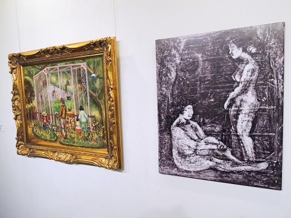

Insights
This interactive data analysis explores the vibrant art scene of Taiwan during the Japanese colonial period (1895–1945). Discover the most influential artists, major exhibitions, and recurring themes in paintings from this transformative era. Through visualized data, uncover how artistic expression evolved under colonial influence and shaped Taiwan’s cultural identity.
We have been looking for connections between entities and relationship between concepts, places, people.
What we can derive from our analysis?
- The Taiwanese Art during the Japanese colonial period has been dominated by Chen Cheng-Po
- The Japanese Ministry of Education, Science and Culture lead the artistic movements dissemination
- The female nude has been a recurring topic in the paintings
Exhibitions and Authors

Exploring more about Chen Cheng-po's Paintings
Then, we asked ourselves another set of questions, still related to Chen Cheng-Po, to retrieve additional information available from Wikidata.
- Which works by Chen Cheng-Po are preserved in museums and what materials or artistic techniques did he use?
- Which figures accompanied him on his artistic journey?
- What historical events influenced his life and career and has he received any awards or recognitions?
Most Important Works, Creation Dates, Museum, Materials and Techniques
| # | Work | Work Label | Creation Date | Museum Label | Material Label |
|---|---|---|---|---|---|
| 1 | http://www.wikidata.org/entity/Q28914169 | Tamsui | 1933-01-01T00:00:00Z | National Taiwan Museum of Fine Arts | oil paint |
| 2 | http://www.wikidata.org/entity/Q28914169 | Tamsui | 1933-01-01T00:00:00Z | National Taiwan Museum of Fine Arts | canvas |
| 3 | http://www.wikidata.org/entity/Q28914188 | Chiayi Park | NaN | NaN | oil paint |
| 4 | http://www.wikidata.org/entity/Q28914188 | Chiayi Park | NaN | NaN | canvas |
| 5 | http://www.wikidata.org/entity/Q28914196 | Snow on Mount Yu | 1947-01-01T00:00:00Z | NaN | oil paint |
| 6 | http://www.wikidata.org/entity/Q28914196 | Snow on Mount Yu | 1947-01-01T00:00:00Z | NaN | panel |
| 7 | http://www.wikidata.org/entity/Q115522767 | Q115522767 | 1935-01-01T00:00:00Z | http://www.wikidata.org/.well-known/genid/abe5... | canvas |
| 8 | http://www.wikidata.org/entity/Q124368166 | Q124368166 | 1930-01-01T00:00:00Z | Yamaguchi Prefectural Museum of Art | NaN |
Chen Cheng-Po was a prominent artist in the Taiwanese art scene, known for his contributions to modern painting and his role in shaping the Taiwan's artistic evolution during the Japanese colonial period. His works are now preserved in major institutions such as the National Taiwan Museum of Fine Arts and the Yamaguchi Prefectural Museum of Art, highlighting his lasting artistic legacy. Among his most renowned creations are Tamsui (1933), Chiayi Park, and Snow on Mount Yu (1947), painted using traditional techniques such as oil on canvas and panel, through which he captured the landscapes and atmosphere of his time.
Related Artists
| # | Artist | Artist Label |
|---|---|---|
| 1 | http://www.wikidata.org/entity/Q3847009 | Ishikawa Kinichiro |
A key figure in his artistic development was Ishikawa Kinichiro, a Japanese artist who significantly influenced his style. Beyond his painting career, Chen Cheng-Po played a crucial role in the artistic community, fostering cultural exchanges between Taiwan and Japan.
Historical events
| # | Event | Description | Event Label |
|---|---|---|---|
| 1 | http://www.wikidata.org/entity/Q244939 | 1947 uprising in Taiwan | 228 Incident |
However, his career was deeply affected by the political and social turmoil of his time, particularly the February 28 Incident of 1947, a pivotal moment in Taiwan’s history that had a direct impact on his life and ultimately led to his tragic execution.
Awards and Recognitions
| # | Award | Award Label |
|---|---|---|
| 1 | http://www.wikidata.org/entity/Q4346554 | Japan Fine Arts Exhibition |
Despite historical challenges, his talent was recognized internationally. He was honored with prestigious accolades, including participation in the Japan Fine Arts Exhibition, a major event that solidified his reputation beyond Taiwan.
1926
During this time, the Japanese administration implemented various policies to modernize the island's infrastructure, economy, and education system. The introduction of a Japanese-style education system included the promotion of arts, leading to the emergence of Taiwanese artists trained in Western techniques.
The year 1926 was particularly notable for the inclusion of Chen Cheng-po’s work in the Seventh Imperial Art Exhibition in Japan, marking a significant milestone in the recognition of Taiwanese art on an international platform. Additionally, the establishment of art societies, such as the Chi-Hsing Painting Society in 1926, played a crucial role in fostering local artistic talent and contributed to Taiwan’s cultural development under Japanese rule. Overall, 1926 was a year of cultural advancement in Taiwan, with increased recognition of Taiwanese artists and the formation of organizations that nurtured the local art scene.
The Teiten exhibitions
The Seventh Imperial Art Exhibition, known as the Teiten (帝展), was a significant event in Japan's art scene, held in 1926.
This exhibition was part of a series organized by the Imperial Academy of Arts, which had taken over the responsibility from the Ministry of Education's earlier Bunten exhibitions. The Teiten exhibitions were pivotal in showcasing and shaping Japanese art during the early 20th century.In 1907, the Japanese Ministry of Education initiated the Monbushō Bijutsu Tenrankai (文部省美術展覧会), abbreviated as Bunten (文展), to promote and exhibit fine arts. These exhibitions featured three main categories: Japanese-style painting (Nihonga), Western-style painting (Yōga), and sculpture. In 1919, the organization of these exhibitions was transferred to the Imperial Academy of Arts, and the events were subsequently renamed Teikoku Bijutsu Tenrankai (帝国美術展覧会), or Teiten (帝展). The Teiten continued annually, except in 1923 due to the Great Kantō earthquake.
The Seventh Teiten in 1926 maintained the structure of its predecessors, featuring artworks across the established categories. Notably, this exhibition marked a significant milestone for Taiwanese art:
Taiwanese painter Chen Cheng-po (also known as Tan Teng-pho) had his oil painting Street of Chiayi selected for display. This was the first time a Taiwanese artist's work was featured in the Teiten, highlighting the growing recognition of Taiwanese artists in the Japanese art community.

Chen Cheng-Po
Street of ChiayiThe Female Nude topic

A painting of Chiayi Park, left, by Taiwanese artist Chen Cheng-po is displayed on Friday in the art center at Cheng Shiu University in Kaohsiung, along with an X-ray image of a painting of two nudes that is concealed beneath the painting.
Photo: Huang Hsu-lei, Taipei TimesChen Cheng-po incorporated the female nude as a significant subject in his body of work, particularly during his studies in Japan and his subsequent period in Shanghai.
- Early Exploration in Japan (1924-1929): While studying at the Tokyo School of Fine Arts, Chen produced numerous female nude paintings. This practice was integral to his academic training, reflecting the institution's emphasis on mastering human anatomy and form through life drawing. However, upon returning to Taiwan, Chen may have painted over some of these nudes with landscapes, possibly due to financial constraints or concerns about the local market's reception of nude art.
- Artistic Development in Shanghai (1929-1933): During his tenure teaching in Shanghai, Chen continued to create artworks featuring female nudes. This period marked a fusion of Eastern and Western artistic techniques in his work. Notably, his participation in the Juelanshe (Storm Society) exposed him to contemporary art movements, influencing his approach to form and composition.